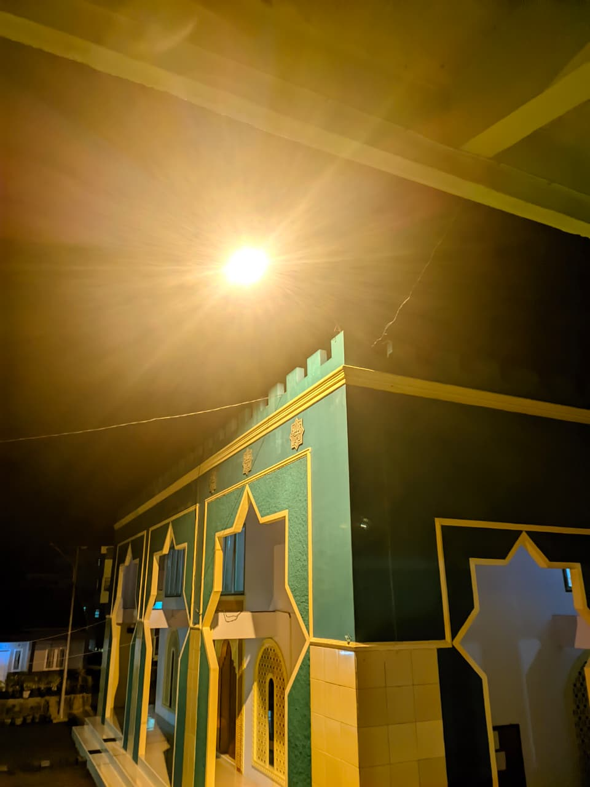

Satu sistem untuk keuangan pesantren yang lebih tertata.
Saku Santri menyatukan pencatatan saldo santri, transaksi harian, dan laporan kas pesantren dalam satu alur kerja yang transparan, rapi, dan mudah diakses kapan saja.
💡 Akun login dibuatkan oleh pengurus pesantren. Hubungi pengurus/admin asrama untuk mendapatkan username & password.
Cara Kerja
Tiga Langkah, Selesai
Tidak perlu proses rumit. Cukup pilih peran, masuk, dan mulai kelola keuangan.
Pilih Peran Kamu
Klik «Masuk ke Sistem», lalu pilih aplikasi sesuai peran: Saku Santri atau Bendahara.
Masuk ke Akun
Login menggunakan akun yang sudah diberikan oleh pengurus pesantren.
Pantau & Kelola
Cek saldo, riwayat transaksi, atau susun laporan keuangan secara real-time.
Kenapa Pilih Saku Santri?
Dirancang khusus untuk kebutuhan pesantren, memudahkan santri, orang tua, dan bendahara memantau serta mengelola keuangan tanpa ribet.
Apa Itu Saku Santri?
Saku Santri adalah platform digital untuk mengelola keuangan santri dan pesantren dalam satu sistem yang terpusat. Setiap saldo, transaksi, dan laporan kas dicatat secara otomatis dan dapat dipantau secara real-time, sehingga santri, orang tua, dan pengurus tidak perlu lagi mengandalkan pencatatan manual yang rawan selisih. Akses dibagi berdasarkan peran: santri dan orang tua cukup memantau saldo, sementara bendahara mengelola transaksi dan laporan, sehingga setiap pihak hanya melihat apa yang relevan bagi mereka. Saat ini Saku Santri digunakan oleh Pondok Pesantren An-Nur, Malangbong, Garut.
Pertanyaan Umum
Masih Ada Pertanyaan?
Bagaimana cara masuk ke sistem?
Klik tombol «Masuk ke Sistem», lalu pilih aplikasi sesuai peran kamu. Saku Santri untuk santri/orang tua, atau Bendahara untuk pengurus keuangan. Setelah itu, login menggunakan akun yang diberikan pengurus pesantren.
Apakah data keuangan saya aman?
Ya. Akses dibatasi berdasarkan peran pengguna, sehingga data keuangan hanya dapat dilihat oleh pihak yang berwenang.
Siapa yang bisa mengakses menu Bendahara?
Menu Bendahara khusus untuk pengurus yang ditunjuk mengelola keuangan pesantren dan memerlukan akun tersendiri.
Bagaimana jika lupa akun atau ada kendala teknis?
Silakan hubungi pengurus pesantren melalui kontak yang tercantum di footer halaman ini.